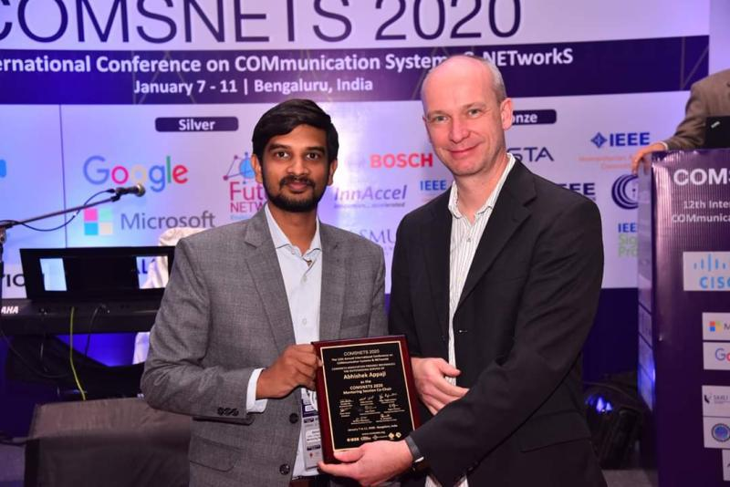
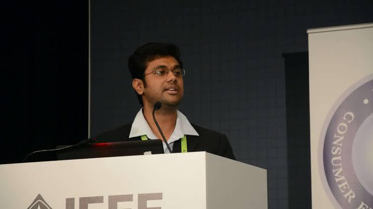
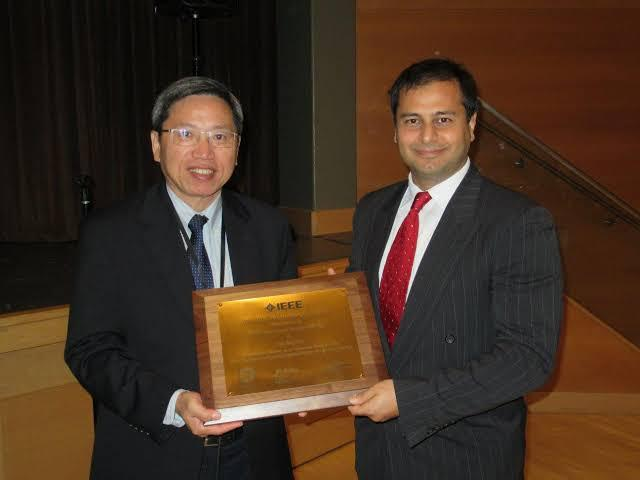
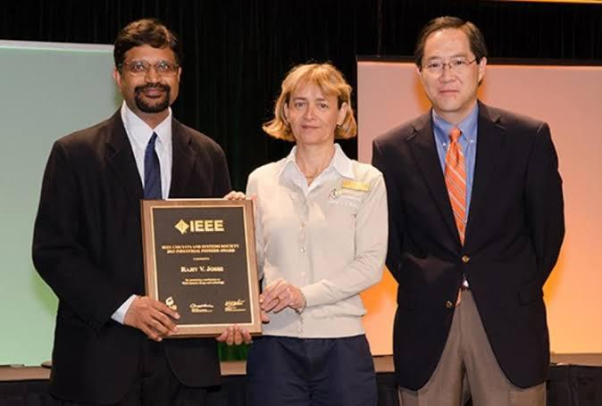
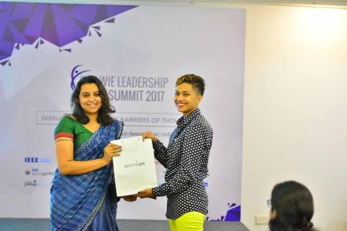

1 / 5

Abhishek Appaji: New Initiative Program Award at IEEE Region 10 Student,
Young Professional, Women in Engineering Congress 2015 held from 9th to 12th
July 2015 at Colombo, Srilanka. Out standing volunteer award for Bangalore
Section 2019.
2 / 5

Manjunath Iyer (R10), Bangalore Section in 2013: For continuous support to the
IEEE Teacher In-Service Program (TISP) and Student Transition & Elevation
Partnership (STEP) events.
3 / 5

Nipun Manral (R10), Bangalore Section 2015: For exemplary leadership and
contribution toward student and young professional activities and for continuous
efforts to elevate the technical and professional development of IEEE members.
Also awarded with IEEE Asia Pacific Young Professional Outstanding Volunteer
Award 2016, IEEE Bangalore Best Volunteer Award 2015, IEEE Asia Pacific
Outstanding Young Professional Affinity Group Award 2015, IEEE, MGA Young
Professionals Achievement Award 2015.
4/ 5

Kartik Kulkarni (R10), Bangalore Section in 2011 :For dynamic leadership in
spearheading humanitarian and innovative engagement opportunities for young
IEEE engineering professionals in India.
5 / 5

Dr. Ashwini Appaji for best Presentation at R10 congress 2018 for YP track and
poster presentation at Bali Indonesia. Out standing YP Volunteer award 2019
Bangalore section.
❮
❯